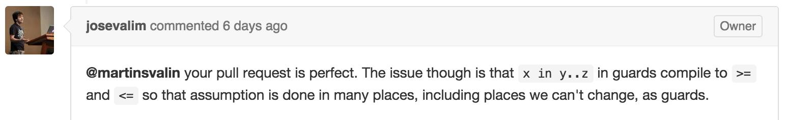
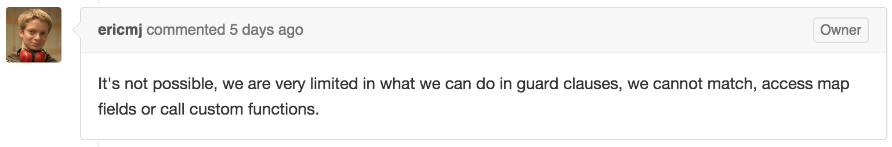

next…in which we learn about ranges, protocols, reducers, guard restrictions and more.
A quick primer
defprotocol Blank do
@doc "Returns true if data is considered blank/empty"
def blank?(data)
end
# Just the atoms false and nil are blank
defimpl Blank, for: Atom do
def blank?(false), do: true
def blank?(nil), do: true
def blank?(_), do: false
end
# Just empty list is blank
defimpl Blank, for: List do
def blank?([]), do: true
def blank?(_), do: false
end
(From http://elixir-lang.org/getting-started/protocols.html)
It’s modules all the way down.
# In lib/elixir/lib/protocol.ex
def __protocol__(name, [do: block]) do
quote do
defmodule unquote(name) do # base protocol module, e.g. Blank
...
unquote(block) # Your protocol rules
unquote(after_defprotocol) # implementation modules, e.g. Blank.List
end
end
end
iex> Blank.blank? [] # => true
iex> Blank.List.blank? [] # => true
iex> Blank.Atom.blank? [] # => false
iex> Blank.impl_for [] # => Blank.List
(From http://elixir-lang.org/getting-started/protocols.html)
Can we express monday..friday in Elixir?
What would we need?
A Weekday struct and a Range.Iterator implementation.
defmodule Weekday do
defstruct name: nil, day: nil
def monday, do: %Weekday{name: "Monday", day: 1}
def tuesday, do: %Weekday{name: "Tuesday", day: 2}
def wednesday, do: %Weekday{name: "Wednesday", day: 3}
def thursday, do: %Weekday{name: "Thursday", day: 4}
def friday, do: %Weekday{name: "Friday", day: 5}
def saturday, do: %Weekday{name: "Saturday", day: 6}
def sunday, do: %Weekday{name: "Sunday", day: 7}
end
defimpl Range.Iterator, for: Weekday do
def next(_first, _range) do
fn weekday ->
case weekday.day do
1 -> Weekday.tuesday
2 -> Weekday.wednesday
3 -> Weekday.thursday
4 -> Weekday.friday
5 -> Weekday.saturday
6 -> Weekday.sunday
7 -> Weekday.monday
end
end
end
def count(_first, _range) do
# Part of the protocol, but not our focus today
end
end
iex> import Weekday
iex> monday..friday
%Weekday{name: "Monday", day: 1}..%Weekday{name: "Friday", day: 5}
iex> import Weekday
iex> monday..friday |> Enum.to_list
# ...infinite loop
Let’s dig through the call stack
Enum.to_list →
Enum.reverse →
Enum.reduce →
Enumerable.reduce →
Enumerable.impl_for!(monday..friday) →
Enumerable.Range.reduce →
Enumerable.Range.reduce
defimpl Enumerable, for: Range do
def reduce(x .. y = range, acc, fun) do
reduce(x, y, acc, fun, Range.Iterator.next(x, range), x >= y)
end
# defp reduce(_x, _y, {:halt, acc}, _fun, _next, _up), do: ...
# defp reduce(x, y, {:suspend, acc}, fun, next, up), do: ...
defp reduce(x, y, {:cont, acc}, fun, next, true) when x <= y do
reduce(next.(x), y, fun.(x, acc), fun, next, true)
end
defp reduce(x, y, {:cont, acc}, fun, next, false) when x >= y do
reduce(next.(x), y, fun.(x, acc), fun, next, false)
end
defp reduce(_, _, {:cont, acc}, _fun, _next, _up) do
{:done, acc}
end
end
<= and >=Enumerable.Range.reduce compares the current and last values with <= and >=.
Is %Weekday{name: "Monday", day: 1} <= %Weekday{name: "Friday", day: 5}?
Do all weekdays compare as expected?
Are we guaranteed to finish reducing?
Sadly, no. 🐼
This looks like a job for…
Range.Iterator.next!
defimpl Range.Iterator, for: Integer do
def next(first, _ .. last) when is_integer(last) do
if last >= first do
&(&1 + 1)
else
&(&1 - 1)
end
end
def count(first, _ .. last) when is_integer(last), do: ...
end
reduce
Structs can’t be reliably compared with >= or <=, but they can be compared for equality.
Can we refactor Enumerable.Range.reduce to only check equality?
defimpl Enumerable, for: Range do
def reduce(x .. y = range, acc, fun) do
reduce(x, y, acc, fun, Range.Iterator.next(x, range))
end
# defp reduce(_x, _y, {:halt, acc}, _fun, _next), do: ...
# defp reduce(x, y, {:suspend, acc}, fun, next), do: ...
defp reduce(last, last, {:cont, acc}, fun, _next) do
# Ranges are inclusive, so run `fun` for the last value.
{:cont, result} = fun.(last, acc)
{:done, result}
end
defp reduce(x, y, {:cont, acc}, fun, next) do
reduce(next.(x), y, fun.(x, acc), fun, next)
end
end
💣 Off-by-one errors in Elixir Stream-related tests. 💣
Remember those {:cont, acc}, {:halt, acc}
and {:suspend, acc} tuples?
These are the accumulators Enumerable.reduce will accept. The reducing function, the reducer, is expected to return one of them.
They make reduce more flexible. Halting and suspending is important for example in Enum.take and Stream.
Enumerable.List
defimpl Enumerable, for: List do
def reduce(_, {:halt, acc}, _fun) do
{:halted, acc}
end
def reduce(list, {:suspend, acc}, fun) do
{:suspended, acc, &reduce(list, &1, fun)}
end
def reduce([], {:cont, acc}, _fun) do
{:done, acc}
end
def reduce([h|t], {:cont, acc}, fun) do
reduce(t, fun.(h, acc), fun)
end
end
defp reduce(last, last, {:cont, acc}, fun, _next) do
# Ranges are inclusive, so run `fun` for the last value.
{:cont, result} = fun.(last, acc)
{:done, result}
end
It doesn’t respect :halt or :suspend.
This took me hours to solve. Classic case of going to bed and only then my brain works out a solution.
reduce... again
We must respect :halt and :suspend. The key is to recurse on the last element as well.
So we re-introduce the 6th element. It flagged the range direction before: up or down. Now it flags “are we done?”.
defimpl Enumerable, for: Range do
def reduce(x .. y = range, acc, fun) do
reduce(x, y, acc, fun, Range.Iterator.next(x, range), false)
end
# defp reduce(_x, _y, {:halt, acc}, _fun, _next, _done), do: ...
# defp reduce(x, y, {:suspend, acc}, fun, next, done), do: ...
defp reduce(y, y, {:cont, acc}, fun, next, false) do
reduce(y, y, fun.(y, acc), fun, next, true) # <- behold!
end
defp reduce(x, y, {:cont, acc}, fun, next, false) do
reduce(next.(x), y, fun.(x, acc), fun, next, false)
end
defp reduce(_, _, {:cont, acc}, _fun, _next, true) do
{:done, acc}
end
end
All tests are green!
alas...

x in y..z?
Nope.

😭😭😭😭😭
Only to learn tons about protocols, ranges, reducers, guard restrictions, and more.
And I learned that both the Elixir source and team is very approachable.
I hope you did too.
Thank you.